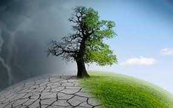

La Importancia del Medio Ambiente en la Actualidad
 La importancia del medio ambiente en la actualidad es un tema vital que abarca diversos aspectos. Aquí tienes algunas ideas para explorar:
La importancia del medio ambiente en la actualidad es un tema vital que abarca diversos aspectos. Aquí tienes algunas ideas para explorar:
1. Cambio climático: Analizar cómo el cambio climático está afectando a nuestro planeta, desde eventos climáticos extremos hasta la pérdida de biodiversidad y el aumento del nivel del mar.
2. Contaminación: Explorar los diferentes tipos de contaminación (aire, agua, suelo) y sus impactos en la salud humana, la vida silvestre y los ecosistemas.
3. Conservación de recursos naturales: Discutir la importancia de preservar recursos como el agua, los bosques y los océanos, y cómo la sobreexplotación está agotando estos recursos.
4. Energía renovable: Destacar la necesidad de adoptar fuentes de energía renovable para reducir las emisiones de gases de efecto invernadero y mitigar el cambio climático.
5. Economía verde: Explorar cómo la transición hacia una economía más sostenible puede crear empleos, impulsar la innovación y mejorar la calidad de vida.
Impactos del crecimiento poblacional en la sostenibilidad ambiental
 El ser humano siempre ha interactuado en mayor o menor grado con el medio ambiente porque es de él de donde obtiene todos los recursos para su subsistencia. Sin embargo, en los últimos tiempos, el crecimiento de la población mundial a niveles desmedidos y el aumento, con ella, de las necesidades de alimentos y diversos tipos de recursos, ha llevado al ser humano a generar severos daños en el medio ambiente planetario, algunos irreversibles, como el agotamiento de recursos no renovables, la contaminación de cursos de agua o del aire y la generación de gases del efecto invernadero, entre otros. Sustentabilidad y medio ambiente,La importancia del medio ambiente es hoy en día innegable y esto tiene que ver con el abuso y el desgaste que el ser humano genera de manera cada vez más notoria sobre los complejos fenómenos naturales, lo que provoca alteraciones que afectan no sólo a otros seres vivos sino también a sí mismo.